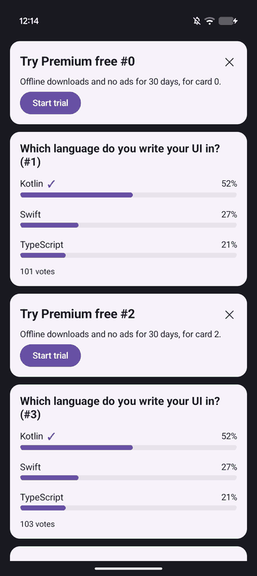
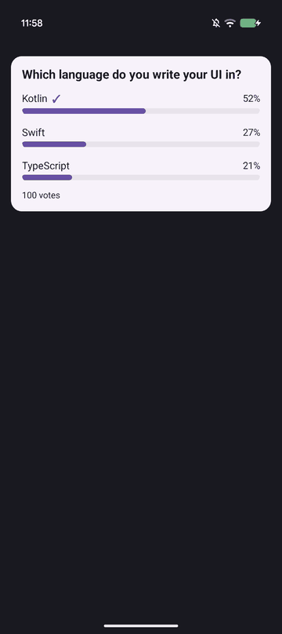
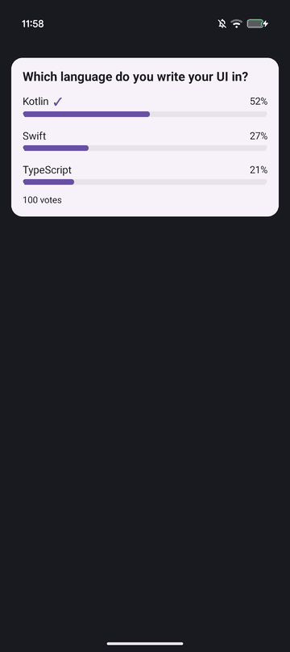
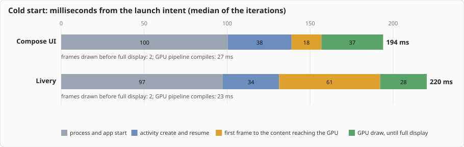
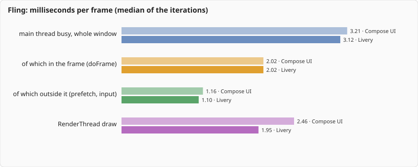

Benchmarks#
What a template costs against the same screen written in Compose UI, measured on a real phone. Every
lane draws the same pixels: TwinRenderParityTest renders each template and its Compose UI twin and
fails if more than 1% of pixels differ, in the feed's card size and in the full-screen frame below.
| Lane | What it is |
|---|---|
| Compose UI | The hand-written twin of the design |
| Player alone | The prepared document played by RcComposePlayer, nothing of Livery around it |
| Livery | LiverySlot / LiveryTemplate with the defaults: background preparation, deferred layout animations, flat layout |
| Livery, no deferral | deferLayoutAnimations = false (flat layout needs the deferral, so it is off too) |
| Livery, no flat layout | flattenLayout = false |
Results#
Pixel 9, Android 17 (API 37), rc-players 3.3.0, 14 November 2026. Macrobenchmark on a
benchmarkRelease build with the shipped baseline profiles, 5 iterations per test. One device, lanes run
one after another rather than interleaved: differences of a few tenths of a millisecond are inside the
noise, and are shown so you can see that, not as a ranking. The whole suite was run twice on this phone (the
second run, shown here, with the host holding its first frame; see the notes on the host), and where the
first run says something different it is mentioned.
The feed the fling benchmark scrolls, whole, as the benchmark host draws it on the phone: 200 cards, alternating a promo banner and a poll, the Compose UI twin on the left and Livery on the right.

They are not pixel-identical on the phone. The twin's card is a little taller (about 1–2 dp, the rows
sitting slightly lower), although TwinRenderParityTest finds no differing pixel at density 2.0 on the JVM.
This phone is at 2.625. Until the test also runs at that density, treat the lanes as the same design, not
the same pixels.
Feed fling#
6 flings down 200 sample cards (banner-classic and poll-card), FrameTimingMetric. A frame's CPU
time, and its overrun against the 16.7 ms budget (negative is time to spare).
| Lane | Frames | CPU p50 | CPU p90 | CPU p99 | Overrun p99 | p50 against Compose UI |
|---|---|---|---|---|---|---|
| Compose UI | 652 | 3.7 ms | 5.8 ms | 8.3 ms | −6.2 ms | 1.00× |
| Player alone | 659 | 4.3 ms | 6.8 ms | 9.3 ms | −5.0 ms | 1.16× |
| Livery | 660 | 3.5 ms | 6.1 ms | 9.0 ms | −5.1 ms | 0.95× |
| Livery, no deferral | 673 | 4.1 ms | 6.6 ms | 8.8 ms | −5.1 ms | 1.11× |
| Livery, no flat layout | 660 | 3.7 ms | 5.9 ms | 8.6 ms | −5.6 ms | 1.00× |
What this says: on a current phone no lane misses a frame (every overrun is negative), and the lanes sit within about 0.8 ms of each other at the median. The order of the medians was the same in both runs: Livery with its defaults lowest, the player alone and Livery without the deferral highest, and the Compose UI twin and Livery without flat layout between them (the first run's medians were 3.9, 4.1, 3.4, 4.3 and 3.8 ms, in the table's order). Turning the deferral off moves Livery to the player-alone figure, the direction it is meant to move. With one device and five iterations per run, this does not show that Livery is faster or slower than Compose UI.
Full-screen document: changing data#
One template (poll-card) in a padded, top-aligned, full-width frame; the sample template takes its
own height, so this is a card on a full screen. Tapping the document shows the next of ten data variants,
ten times. Every variant is bound to the contract before the screen shows, so the tap itself costs each
lane one swap of state; the cost of binding data is a separate measurement, still Planned.
The single-document screen, as drawn on the phone (Compose UI twin, then Livery):


| Lane | Frames over 10 changes | CPU p50 | CPU p90 | CPU p99 |
|---|---|---|---|---|
| Compose UI | 10 | 4.3 ms | 5.7 ms | 8.6 ms |
| Player alone | 19 | 3.9 ms | 7.6 ms | 10.5 ms |
| Livery | 22 | 4.9 ms | 7.7 ms | 12.7 ms |
| Livery, no deferral | 20 | 5.0 ms | 7.8 ms | 10.4 ms |
| Livery, no flat layout | 22 | 4.9 ms | 7.5 ms | 10.6 ms |
The Remote Compose lanes draw about two frames per change where the twin draws one. The traces show why in
count: ten recompositions for ten changes in the twin, twenty for the player alone and twenty-one for Livery
(the same in all five iterations). The player alone has none of Livery's code in the path, so the second pass
comes from the Remote Compose player (or from how the host hands it new values), not from LiveryTemplate.
Why the player recomposes twice is not yet known. Per-frame cost is comparable, and the twin's tail is lower.
Cold start#
Process start to the first frame with the document in it. In this run the host held its first frame until the
document could draw (see the notes below), so initial display is that frame on every lane, and full display is
the frame after reportFullyDrawn().
| Lane | Initial display | Full display |
|---|---|---|
| Compose UI | 191 ms | 194 ms |
| Player alone | 223 ms | 225 ms |
| Livery | 218 ms | 220 ms |
| Livery, no deferral | 225 ms | 227 ms |
| Livery, no flat layout | 234 ms | 236 ms |
| Livery, preparing in composition | 217 ms | 219 ms |
The host no longer holds that frame itself. Its Livery lanes are a plain LiverySlot, as an app writes one, and
Livery's first-frame budget (LiveryHost.firstFrameBudgetMillis, 150 ms) holds the first frame for the slot's
answer instead. Planned: these numbers again with that host, with the next device run.
The Compose UI twin reaches a drawn document about 26 ms before Livery (194 against 220 ms), and the Remote Compose lanes sit between 219 and 236 ms, within 20 ms of each other, which with one run per lane is not a ranking. The Livery lanes also plan ten data variants before their first draw (nine more than one plan needs), which is in these numbers.
Notes on the host#
- No emoji initializer. AndroidX Compose depends on
emoji2, whose startup initializer loads the emoji font about half a second after the first frame and makes Compose text re-measure. In an earlier run that put every lane, the twin included, at about 690 ms to full display for that reason alone. Livery's own manifest now removes the initializer from any app that uses it, so no lane here has it. Livery loads emoji itself two frames after its first template draws (LiveryEmoji), as it does in an app. That happens during a Livery lane's run, and never in the Compose UI twin's or the player alone's. - The first frame was held, in the run above, by the host. The activity vetoed drawing (an
OnPreDrawListener) until the document was composed, as an app keeps its splash screen up. Before that, the Remote Compose lanes drew an empty frame while they planned, so their initial display was an earlier, empty frame (about 150 ms against a full display of about 230 ms). The host now leaves this to Livery's first-frame budget, as an app would, and draws its Livery lanes with nothing of its own around them. - Reported fully drawn after the document draws. The Compose UI and player lanes report after the
frame that composed the document. The Livery lanes report on Livery's
Impressionevent, which already comes after the template's first frame, so they don't wait a frame more. Every lane then asks for one more frame afterreportFullyDrawn(), sinceStartupTimingMetricends at the next frame drawn.
What the traces show#
The numbers above say how long; Perfetto traces of the same runs say where it went. Each benchmark iteration
records one, and livery-baselineprofile/traces/compare.py takes the median over the five of a lane and puts
the Compose UI twin and Livery (defaults) side by side. The tables and the charts below are its output, and the
Perfetto UI screenshots are livery-baselineprofile/traces/screenshots.py's. (The perfetto-traces agent skill
in .claude/skills/ describes how to read these traces.)
Cold start#

| Cold start (ms from the launch intent) | Compose UI | Livery | Difference |
|---|---|---|---|
| bindApplication ends | 100.4 | 97.4 | -3 |
| activity resumed | 127.7 | 124.5 | -3.2 |
| first frame starts | 138.8 | 131.3 | -7.5 |
| document drawn on screen (RenderThread frame with content) starts | 156.8 | 192.2 | +35.4 |
| reportFullyDrawn | 192 | 218.6 | +26.6 |
| full display (end of the first frame drawn after it) | 194 | 220.3 | +26.3 |
| frames drawn before that | 2 | 2 | 0 |
| main thread: Compose initializeView | 2.4 | 2.2 | -0.2 |
| main thread: recompose | 0.7 | 2.9 | +2.2 |
| main thread: measure | 4.3 | 5 | +0.7 |
| main thread: text layout | 0.2 | 0 | -0.2 |
| RenderThread: frame that draws the content | 37 | 31.8 | -5.2 |
| RenderThread: GPU pipeline compiles | 27.3 | 22.6 | -4.7 |
| RenderThread: GPU pipeline compile count | 4 | 4 | 0 |
- The first 125 ms are the same. Process start, app initialisation and creating the activity run the same code in
both lanes:
bindApplicationends at 100 ms against 97 ms, and the activity is resumed at 128 ms against 125 ms. - Both lanes held their first frame (the host's hold, in this run); Livery's content arrives later. The twin's first frame starts at 139 ms and its content is on the GPU 18 ms later. Livery's first frame callback starts at 131 ms, measures and lays out, and is held with nothing drawn (the Perfetto view below shows these traversals), and its content reaches the GPU at 192 ms, 61 ms later. In that stretch the main thread shows no slice longer than a millisecond, because the work is on a worker thread: Livery plans the host's ten data variants and prepares the document there. Livery's own trace sections say where those milliseconds go (the next subsection).
- Then Livery's main thread does a little more. Composition takes 2.9 ms (against 0.7) and measure 5.0 ms (against 4.3). Each lane draws two frames before full display; before the first frame was held Livery drew three.
- The GPU's share is the same. Both lanes compile four pipelines the first time the screen is drawn, 23 ms against 27 ms, and the render thread's content frame takes 32 ms against 37. That is the driver, not the template.
Where Livery's cold start goes#
Livery marks its own phases in the trace (livery:<phase>:<design>, see the notes below), including work on other
threads. A later run of the two start-up lanes with them on, median of five (the cold-start numbers above are from the
run before, so the totals differ by a few milliseconds of run-to-run noise):
| Livery section | Count | Total |
|---|---|---|
livery:manifest-decode (the bundled catalog's manifest, on the main thread at app start; both lanes) |
1 | 3.8 ms |
livery:plan (planning a card's data) |
10 | 3.5 ms |
of which livery:resolve (choosing and reading the template) |
10 | 3.0 ms |
of which livery:asset-read (the bundled blob; the same one each time) |
10 | 1.0 ms |
of which livery:bind (data against the contract) |
10 | 0.5 ms |
livery:ready, which is livery:prepare (the document) and the fonts (none here) |
1 | 15.7 ms |
of which livery:for-display (the document rewritten for this display's density) |
1 | 9.1 ms |
livery:compose (the card's composition, on the main thread) |
1 | 2.6 ms |
In order, in the iteration closest to the median (milliseconds after the launch intent): the ten plans run from
140.0 to 144.2 ms (the first takes 1.4 ms, the rest about 0.2 ms each); the document is prepared from 144.3 to
158.9 ms, of which the for-display rewrite is 146.3 to 154.9 ms (8.6 ms), with about 2 ms of decode and link before it
and about 4 ms after; then the main thread composes the card. So the worker's 15 ms of CPU is almost all document
preparation, and more than half of that is the density rewrite. The host's nine extra plans cost about 3 ms, much
less than the gap to the Compose UI twin, so the ten-variant caveat above is small.
Two things this suggests, neither tried: the rewrite and the decode could run before the first frame (an app does this with Livery's startup API, which prepares at process start; this host prepares after the activity exists), and a cold rewrite of 9 ms may be partly code that was not yet compiled, which a baseline profile of that path would show.
Fling#

| Fling (per frame) | Compose UI | Livery | Difference |
|---|---|---|---|
| frames | 658 | 667 | +9 |
| in the frame: doFrame ms, mean | 1.85 | 2.09 | +0.24 |
| in the frame: doFrame ms, p90 | 2.87 | 3.83 | +0.96 |
| in the frame: doFrame ms, p99 | 5.39 | 6.44 | +1.05 |
| in the frame, per frame ms: animation (recomposition, effects) | 0.656 | 0.732 | +0.076 |
| in the frame, per frame ms: draw recording (draw-VRI) | 0.851 | 0.833 | -0.018 |
| in the frame, per frame ms: measure and layout | 0.459 | 0.575 | +0.116 |
| in the frame, per frame ms: RenderThread draw (DrawFrames) | 2.307 | 2.133 | -0.174 |
| whole window, per frame ms: main thread busy (all top-level slices) | 2.908 | 3.289 | +0.381 |
| whole window, per frame ms: of which outside doFrame (prefetch, input, other) | 1.056 | 1.201 | +0.145 |
| whole window, per frame ms: Recomposer:recompose | 0.015 | 0.196 | +0.181 |
| whole window, per frame count: Compose:recompose passes | 0.18 | 0.33 | +0.15 |
| whole window, per frame count: text layouts (TextLayout:initLayout) | 1.28 | 1.86 | +0.58 |
| whole window, per frame ms: text layout | 0.124 | 0.058 | -0.066 |
- The main thread does about the same work per frame, within 0.4 ms. 2.9 ms busy for the twin against 3.3 ms for Livery over the whole fling, and 1.9 ms against 2.1 ms in the frame itself. In the first run it was the other way round (3.2 against 3.1 ms), so which lane is ahead is not stable between runs, and the slowest frames run a little longer for Livery in both (p99 6.4 ms against 5.4 ms now).
- The work sits in different places. The twin's lazy list appears to compose its upcoming items between frames and in measure (its recomposer time is close to nothing); Livery's cards show up as composition passes in the recomposer (0.20 ms per frame against 0.02), consistent with each card's plan arriving after its first composition. That is an observation about where the time is, not a cost the lane pays on top.
- Text is laid out more often, and for less. 1.9 layouts per frame against 1.3, taking 0.06 ms against 0.12.
- The render thread does less for Livery (2.13 ms a frame against 2.31; 1.95 against 2.46 in the first run). We have not investigated why.
In the Perfetto UI#
The same runs in Perfetto's own timeline view: the Compose UI twin above, Livery below, on one scale. Each pair shows the same span at the same size, so a millisecond is the same width in both, and the grey flags mark the same time in both (the ruler's own times are each trace's clock). The rows are the launch, the frame timeline, the app's main thread and its render thread; each lane is the iteration closest to its median.
Cold start, 100 to 250 ms after the launch intent. The green flag is full display:


Six frames of the fling, 100 ms (click an image for the full size):


What the traces still cannot tell us: inside prepare, rc-players' decode and link. Its published player has no trace
spans of its own (3.3.0), so that part is only the difference between Livery's prepare and the for-display section
inside it.
Livery's trace sections#
LiveryTrace (in livery-client) writes named sections to the system trace on Android and does nothing elsewhere; a
section's name is livery:<phase>[:<design or contract>] and never carries data. Synchronous ones sit on their thread's
track; ones that can resume on another thread (planning, resolving, preparing, fonts, image fetches) are async tracks.
| Section | Wraps |
|---|---|
livery:plan:<design> |
SlotPlanner choosing a template and binding data for a slot, decision or feed item |
livery:resolve:<design> |
the repository choosing the template and reading its bytes |
livery:asset-read:<sha>, livery:manifest-decode |
the bundled catalog's blobs and manifest (Android) |
livery:bind:<contract> |
ContractBinder.bind, data against the contract |
livery:prepare:<design> |
the player's document preparation: decode, link, rewrite |
livery:for-display |
the rewrite for the display, inside prepare |
livery:ready:<design> |
a card's document and fonts ready (readyToDraw) |
livery:fonts:<design>, livery:font-load:<sha> |
catalog fonts read and loaded |
livery:image-resolve:<kind>, livery:image-decode |
an image's bytes and their decode |
livery:compose:<design> |
a card's own composition: its first, and each time its prepared document or fonts arrive; not later recompositions inside the player's own scopes |
livery-baselineprofile/traces/compare.py totals them per phase for the cold-start window.
What is not measured yet#
Planned: a warm second visit; continuous animation and idle frames; resize and theme change; a
per-template split and counts of documents prepared and reused; background preparation traces; memory;
baseline profile on against off; a low-end device. The plan, in order, is
docs/benchmarks/PLAN.md.
Reproduce#
With a phone connected (a device with a low battery is refused, as it throttles):
./gradlew :livery-benchmark:connectedBenchmarkReleaseAndroidTest
The tables under "What the traces show" are python3 livery-baselineprofile/traces/compare.py <the run's
traces> --svg site/assets/benchmarks, and the Perfetto UI screenshots are
livery-baselineprofile/traces/screenshots.py, which serves the official Perfetto UI (checked against its
published hashes) and the traces from your own machine and writes only the images. The raw medians behind these
tables are in
docs/benchmarks/results/.
The host app and benchmarks are in livery-baselineprofile/; its README describes each lane. A
JVM profile (:livery-compose:liveryFeedProfile) gives the same comparison without a device, with
software rendering, for quick iteration.